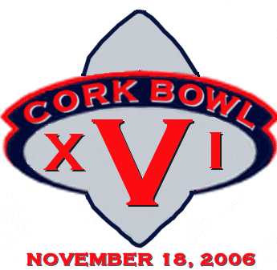
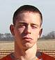
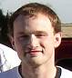

November 18, 2006 |
 |
||||
 |
||||
 | ||||
click HERE |
|
Quarterback 13th year - 5'10 - 150 Five Cork Bowls have come and gone since Reggie Truitt last threw a pass in a game, but there is no lack of confidence on his part on whether he can get the job done this year. "People always talk about how great of a quarterback Willy is," remarked Reggie. "Who do you think taught him? I groomed him into the passer he is today, and by the end of the game this year, there will be no doubt who the best quarterback is in the family." Truitt handled the quarterback position off and on for the first half of his career before moving to the receiver spot full time in Cork Bowl 11. His 135 career completions and 47 touchdown passes rank third on the all-time list despite playing only two full games at the position. "There's no doubt he has had some success in the past at the position," added teammate Patrick Cork. "However, the game has changed a lot since he has quarterbacked. I'm sure it will take a few possessions to shake the rust off, but our team believes in him to get us the ball." Truitt set records for completions, attempts and touchdowns in Cork Bowl 7 with his 51-86, 18 touchdown performance. Those records stood until Cork Bowl 14. However, in the win he was picked off a record 7 times. His 47 to 16 touchdown-to-interception ratio for his career is far lower than the likes of brother Willy, Tony Cork and Kirby Newell. "There's no doubt that I have to limit the turnovers to establish myself as a top notch quarterback," added Truitt. "Most of those picks came from trying to do much with what I had to work with. The caliber of receivers I have worked with over the years has left a little to be desired. That's definitely not the case this time around." Truitt will have an outstanding set of targets this year including the #1 and #3 receivers in league history in Patrick Cork and Greg Howard. In addition to Cork and Howard, Truitt will have Steve Sanders, Kevin Ryan and Jake Hoalt joining him on the field. "To know I have those guys running routes for me gives me a lot of confidence," added Reggie. "When you are going to be doing something you haven't done in a while it's important to have a strong supporting cast to help you carry the load." Truitt will be going up against his younger brother Willy this year - something that has been rare in recent years. "I've used him a lot in the past few seasons as a motivator," remarked brother Willy. "Now I'm gonna have to pull from something else. It will be a little odd to look across the field and see him wearing opposing colors." Truitt is the only player in league history to throw for at least 45 touchdowns and catch 25 or more touchdown passes. Defensively, Truitt became the first player in Cork Bowl history to pass the 100 tackle mark in a career with his five tackles in last year's game. His interception in last year's game also moved him into sole possession of first place on the all-time list with 13. |
Quarterback 12th year - 5'10 - 150 "It felt good to be back home." That's how Willy Truitt answered the question of what it was like to quarterback his team team last year to a Cork Bowl win. "I think last year was just what I needed. It gave me a spark, to say the least. I hope I showed my worth to the league in the QB position. I want to be out there, and I want to be the best QB in the league." After playing receiver for the past year and a half, Truitt was virtually forced behind center for Cork Bowl 15 as scheduled starter Kirby Newell was unable to play in the game. Truitt didn't miss a beat as he played a nearly flawless game. His 37-for-64, 13 touchdown performance got the headlines, but the most important number was the one that came next in the line score: 0 interceptions. In fact, Truitt has thrown just one interception in his last three games - a span of over 150 attempts. "The most amazing thing about that game is that he didn't even know he would be playing QB until the night before," said Truitt's top target Brooks Wilson. "How many guys could prepare to play one position for the entire year, have to switch with 12 hours notice, and do what he did? I can only think of one." The story is well known by now. Truitt has put up gaudy numbers at the quarterback position over his career. In seven full games, and two additional halves of football, Willy has completed 308 of 536 passes with 118 touchdowns and only 15 interceptions. A full 1/3 of Truitt's career interceptions came in one game (Cork Bowl 7). In the rest of his games, he has only been picked off ten times in 467 passes. "The one thing I've learned through the years is you can't turn the ball over in this game," remarked Willy. "There are too many points scored to give up possessions. You have to learn when the risk is worth taking. There is no reason to force the issue unless there is no other option. It's sounds cliche, but you have to take this game one play at a time." Not that Truitt needed the help, but his receiving corps for this year's game has been rated the best in the 16 year history of Cork Bowl in virtually every preseason publication. With Jeff Henney joining Brooks Wilson, it unites Truitt's two favorite receivers from the past five years. Henney was Truitt's number one guy in Cork Bowls 11 and 12, and last year Brooks Wilson hauled in 15 passes for 6 touchdowns. "They are two big, imposing receivers, and I can't believe I have them both to throw to. It's a luxury unprecedented in league history." Joining them will be the number two receiver in Cork Bowl history (Chris Cork), last year's MVP Robert Trimble and Ryan Tomlinson. "I look at my squad and can't wait. I don't see how we could lose, but then you look at that other roster, and they are just as deep. The fans are gonna be the real winners this year," beamed Truitt. As for the opposing defense of the Civets, Truitt had nothing but positive things to say. "They have the potential to have one of the best defenses ever. They have great man to man guys with Patrick and Steve, and Reg and Greg are two of the best free safety, open field tacklers ever in Cork Bowl. It's going to be a true test for us." |
Wide Receiver / Quarterback 3rd year - 5'10 - 165 After what could only be described as a frustrating performance in Cork Bowl 11, Steve Sanders felt he had to get away from the game and regroup. However, nobody expected him to get as far away as he did. Sanders left literally days after a devastating Cork Bowl 11 loss and headed as far from Corklestick Park as he could - to China. "I had to get away from things," reflected Sanders. "I had plenty of time to think about a lot of things and there aren't many places better to do that than China. One of the first things I learned when I was there was the wisdom of Confucius who once said, 'Man who run in front of car gets tired. Man who runs behind car gets exhausted.' You don't find that kind of wisdom here in the United States." Sanders was a rookie phenom in Cork Bowl 10 when he helped lead a remarkable comeback that brought his team nearly all the way back from a four touchdown deficit. His 15 catches and enormous interception return for a touchdown late in the game made Sanders an instant hit among Cork Bowl fans and he was handed the starting quarterback job the following year in Cork Bowl 11. The results were not what Sanders had hoped for as he was intercepted six times in the 114-98 loss. "In his defense, the teams were not exactly even that year and the muddy field made it worse," added former teammate Patrick Cork. "The fact that he still went 41-for-74 and threw 14 touchdowns is nothing short of a miracle. His leadership and toughness that day were the best I've seen in 15 years of playing. There is no doubt he will be a huge asset to our team this year." "The wisdom I've gained in China has done nothing but help my confidence," added Sanders. "I'm excited to get back on the field. I have a lot to prove to the skeptics." Sanders has played in just two Cork Bowls, and has gone 0-2 despite some solid play on both sides of the ball. "We're going to get him a win this year," chimed Reggie Truitt. "He's come a long way back to play this game and we will do all we can to help him get a ring." Sanders will be on call as the team's backup quarterback if the Civets need him. |
Wide Receiver 3rd year - 6'0 - 165 Few players have made the kind of instant impact that Jeff Henney did when he jumped into the spotlight in his rookie debut in Cork Bowl 11. Henney was the game's MVP and nearly single-handedly led his team to victory, especially on the defensive side of the ball as he returned three interceptions for touchdowns and scored four more times on offense. "You want to talk about someone stepping in and taking over, you need not look any further than Jeff Henney," remarked former and current teammate Willy Truitt. "He took over the game from the first series and never looked back." Henney followed up his MVP performance with another near flawless performance in Cork Bowl 12 with 16 catches, 8 touchdowns and another interception return for a touchdown. His two-year totals of 28 catches, 12 touchdowns, 20 tackles, 5 interceptions and 4 defensive scores are some of the most impressive ever put up in a player's first two years. However, his last game action came nearly four years ago, so the "skinny on Henney" is again a question. "You would think people would learn not to doubt me, but I guess some people take a little longer to be convinced," replied Henney. "Nothing has changed since the days of my domination. Had it not been for my relocation to Texas, I would have three more rings and probably another MVP trophy or two. The only thing the layoff did was make me hungry to get another championship." Henney will be part of a stellar receiving corps as he and Brooks Wilson will likely get a lot of looks from Willy Truitt. "Brooks and I were locked in last year, and Henney and I clicked from the first play of his first game. It's going to be difficult to decide which of them to throw to because they'll both be open all day." Henney is 2-0 in his brief career and will be looking
to stay undefeated. "I've got a few more fingers that are jealous they
don't have a ring keeping them warm," added Henney. "I don't see
any reason why I won't have another one after this year's game." |
Wide Receiver 16th year - 5'11 1/2 - 150 As the years go on, the catches continue to pile up for Patrick Cork. With 14 receptions last year, Cork continues to close in on the 200-catch mark with 178 receptions and 57 touchdowns in his long career. "There's no doubt I'm not the same receiver I was five or six years ago," remarked Cork. "But I still have a little left in the tank. You're not going to see a lot of big plays, but I have always prided myself on making the important catches at key points. Give me a game with a handful of fourth down receptions that help the team move the chains, and I'll take that. Even though I'm not the same player I used to be, I still don't think anybody can guard me one-on-one and shut me down for an entire game." Cork tallied double-digit receptions last year for the 9th time in the last 10 years, with the only exception coming in Cork Bowl 12 when he fractured his collarbone in the first quarter. "He's a steady receiver with reliable hands and a knack for making catches at key points in games," remarked new quarterback Reggie Truitt. "I've always been against him so it will be comforting to have him on my side for once." Despite playing in 12 Cork Bowls together, Cork and Reggie Truitt have never been teammates. That will change this year. "I've always had a lot of respect for Reggie and we have had some great battles over the years," added Patrick. "I'm excited to join forces with him and think it could be a big year for both of us." Cork's offensive numbers are well known as he is the all-time leader in receptions and touchdowns, but it was his defense two years ago that helped him tally his fourth MVP award in Cork Bowl 14 - and his first since Cork Bowl 10. His two interceptions and forced fumble helped lead his team to victory and gave Cork his 7th championship - which is tied for the most in league history. His 21 catches were a game-high. Cork dropped off with just 14 receptions and 2 touchdowns last year, and Robert Trimble believes he was the reason why. "Patrick has had his days in the sun, but he better hope I don't guard him again or he'll be lucky to catch 10 passes," barked Trimble. "I think Robert has a lot to learn," added Patrick. "He won an MVP last year by default because nobody else on his team deserved it. I welcome the challenge of having a young pup like him guard me." Cork's 88 tackles are third-most in league history,
however most of his influence on defense has come from forcing turnovers.
Cork has picked off 8 passes in his career, and has also forced five fumbles.
The 13 forced turnovers are second-most behind new teammate Reggie Truitt
who has 14. |
Wide Receiver 8th year - 6'1 - 172 The long quest for a Cork Bowl championship finally ended for Brooks Wilson last year as he garnered his first official championship in last year's snowy contest. "I've told people before that I'm sure I won all the early games that aren't officially recognized, but nobody is willing to listen," opined Wilson. "I was a dominant force back then and led my team to a number of titles so it really wasn't much of a surprise to do the same last year." Wilson was one of the game's founding fathers, playing in each of the first three games. However, he left the game after Cork Bowl 5 and didn't return until Cork Bowl 13. His return defined the cliche of being "back and better than ever", as Wilson has been a top receiver for each of the past three seasons. Wilson has put up impressive, and consistent, numbers with games of 14, 21 and 15 receptions. He also turned 19 of those catches into touchdowns. "He has re-established himself as a go-to target," said Willy Truitt. "He was my number one man last year and he was the number one target the two years before that. Now that we have Henney joining him, I have no idea how their team is going to stop us. We have too many weapons, and Brooks is right there at the top of the arsenal." "I don't want to get too personal or take too much away from him, but you have to take into consideration who was guarding Brooks the past three years," questioned Patrick Cork. "I love Chris to death, but anyone that watched the past few years knew that was a mismatch. We're going to put Reggie or Greg or maybe Colonel Sanders on him and we'll see if he can haul in 15-18 more this year. Frankly, I don't see it happening" "Hearing things like that from Patrick doesn't surprise me at all," answered Wilson. "I noticed he didn't himself in that group of possible defenders which is not a shock to any of us. He's always been intimidated by me and I would doubt if he would be lined up against me on any play this year. If he does, he will be forced to learn a very tough lesson or two." Despite missing seven games from 1996 through 2002, Wilson has totaled 69 catches and 21 touchdowns. His reputation as a dirty player has also followed him throughout his career. "What some people say is dirty play, others say is a sign of toughness," added Wilson. "It's the weak players that can't handle the extra stuff that goes on after the play that think I'm a cheapshot. If they'd put their skirts away and play the game the way it was meant to be played, we wouldn't hear much talk about it." |
Wide Receiver 11th year - 5'7 - 150 It had only happened two other times in the past ten years, but it happened again last December: Greg Howard left Corklestick Park without a championship ring. Howard's impressive career record of 7-3 in Cork Bowls is the highest winning percentage of any player that has played in at least 5 contests. "I am a winner, and what do winners do? They win. It's that simple. For me to lose in Cork Bowl is a feeling I'm not accustomed to, and I don't think it will be something I have to deal with for a few more years. " After being on the short end in his first career game in Cork Bowl 6, Howard was on the winning squad 7 times over an 8-year span. "When you think of where he came from when he first broke in, it's nothing short of amazing - no pun intended," boasted Patrick Cork. "He has made himself into an absolute brute on the field and has become one of the shining stars of this game." Howard's rise to stardom began in his second year as he had a huge second half in Cork Bowl 7 and finished with 9 catches and 6 touchdowns. After a few solid games that followed, Howard joined with Steve Sanders in a near historic comeback in Cork Bowl 10 when they rallied from a four-score deficit to nearly win the game. "That was the game that really brought him into the forefront," commented Reggie Truitt. "He was unstoppable late in the game and he's not looked back since." Over the past three seasons, Howard has had games of 15, 18 and 11 receptions and has scored 16 touchdowns. He was the unanimous MVP selection in Cork Bowl 13 and was co-MVP the following year with one of the most amazing individual efforts in league history. In Cork Bowl 14, Howard not only had 18 catches and 6 touchdowns, but he was a one-man tackling crew for most of the second half and shattered the record for most tackles in a game with 26 - with nearly half of them coming in the fourth quarter. "He is in phenomenal shape and gets better as the game goes on," added Patrick. "He doesn't get tackled easily and when the rest of the players are tired, it makes it that much harder to bring him down." Howard's outstanding play in recent years has moved him into third on the career list for receptions (90) and touchdowns (42). His 46 tackles over the last three years has also vaulted him near the top of that list as well as he ranks fourth with 87. "I still think they should bring blitzing back into play so I can truly show my abilities," added Howard. "There has never been anyone, and there never will be anyone, that can block me one-on-one. I will continue to petition the league every year until they change that rule. Now that there aren't old men and washed up used-to-bes quarterbacking, I see no reason why we can't dump that rule." |
Wide Receiver 16th year - 6'2 - 185 For the past three years, the whispers have followed each and every game as people wonder if they have seen the end of an era. However, Chris Cork keeps coming back and swears he has more games in his future. "I'll let you all know when I'm ready to hang up the cleats," said Cork. "I'm not going to hang around just to keep playing. As long as I can make an impact on the game, I'm going to keep going out on the field every November." After spending the past eight years on his brother's team, Chris will find himself on the oppostie side of the ball this year. "It will definitely be a little different, but this is a business. You can't expect to have the same teammates year in and year out. It's been a bit of an oddity that we were together for that many years, but those days are in the past." Despite tallying double figures in receptions only one time in the past seven seasons, Cork remains second on the all-time receiving list with 123 catches and 47 touchdowns. After a 13-catch game in Cork Bowl 12, Cork has totaled just 21 receptions over the past three years. However, he still has a knack for making big plays. "He made two huge plays in Cork Bowl 14 for touchdowns," commented teammate Brooks Wilson. "He tends to lull you to sleep and then makes a big play when you least expect it." With Cork separated from his brother, he now teams up with a pair of long-time rivals: Jeff Henney and Brooks Wilson. Much like Reggie and Patrick have always guarded each other and never been on the same team, Cork has never been teammates with either Henney or Wilson. "I'm just glad I won't be the victim of Wilson's cheapshots anymore," added Chris. "It will give me a totally different perspective on him being on his team." The team of veterans will be anchored by the experience of Cork, Wilson and Henney. "Those three are as rock-solid as any three players that have ever played the game," boasted quarterback Willy Truitt. "When you think of true professionals, you think of people like Chris. I haven't had the opportunity to be on his team much in the past five years, but he's always been sure-handed and he's an absolute beast to bring down. The big bodies of Chris, Brooks and Henney will wear down their tacklers. By the fourth quarter, they'll be so tired of being pounded on all game, the game will be ours...if it isn't already." Cork has tallied 91 tackles in his career, good enough
for second in the all-time rankings. His 12 interceptions are second-most
as well, although he has just three picks since Cork Bowl 7, and none since
Cork Bowl 11. |
Wide Receiver 11th year - 5'11 - 165 After three consecutive seasons with less than 10 catches, Kevin Ryan had his most impressive game since his near-MVP performance of Cork Bowl 11 last season. Ryan's 11 receptions and 3 touchdowns were not enough for the Mongeese to pull out the win, but they did shed some light on what type of player Ryan appears to be. In fact, Ryan's best performance prior to the two recent poor weather successes was Cork Bowl 5 when he hauled in 9 passes and scored 4 touchdowns on a snow-covered field. "The guy has become a bad weather force," remarked Patrick Cork. "It's not a coincidence when the three best games he has ever played were on a field that was halfway underwater or when the grass was covered with 6 inches of snow. He's definitely gained the reputation as a mudder." Ryan has caught 33 passes in his three foul-weather contests and 37 in his other 7 games. Ryan's bruising style has a lot to do with that reputation. "His game is not built on speed," added Greg Howard. "His style is take a short pass and go straight ahead. There's not a lot of dancing around when Kevin gets the ball." The condition of the field will likely play a role in Ryan's contributions to this year's game as well. Ryan has had a long Cork Bowl career and reached the 70 reception mark last year - the 5th most catches in Cork Bowl history. He has also hauled in 27 touchdowns over the years. Until recent years, Ryan had struggled to come out
on the winning side in Cork Bowl as he started his careeer just 1-4. However,
a recent streak of 3 wins in 4 years has brought his career record up to
4-6. "I'm hoping for another sloppy, muddy, or snowy field," commented
Ryan. "The nastier it is, the better I play. If it's sunny and warm,
I may just have to take the game off." |
Wide Receiver 10th year - 6'0 - 165 "I'm back and better than ever, so the league had better be prepared." Those bold words came from an unlikely source in Ryan Tomlinson. "I've heard all the talk about my play in recent years, and honestly, it's time to shut some of the critics up - especially that hack that calls himself 'The Scoop'." Tomlinson had one of the best games of his career two years ago when he hauled in 10 passes and scored a pair of touchdowns. However, he followed it up with a disappointing performance last year finishing with just 3 catches and a lone touchdown. "I'm not a bad weather kind of player," added Tomlinson. "I excel in better conditions. If the field's a little soft and wet, that's OK, but I'm not the type of player that excels in snowy conditions. With the game in mid-November this year, I can't imagine I'll have to play in the snow again." Tomlinson continues to be a big crowd favorite despite posting just two double-digit reception games in his first 9 seasons. "He's not got good hands, he's not fast, and he really doesn't provide much after the catch. Other than that, he's a great receiver," ripped Greg Howard. "Greg can talk all he wants, but last year I walked off the field with a championship ring on my finger and he walked off with his tail between his legs," replied Tomlinson. "Last time I checked this was a team game. I understand I'm not the top receiver our team has, but anything I can provide to help our team win another game will be helpful. I'm not expecting to catch 15 passes, but if I can make a play or two that puts us in a position to win, I've done my job." Tomlinson has hauled in 51 passes in his career and scored 14 times. After going his first 6 seasons without an interception, Tomlinson has 2 picks in the past three years. |
Wide Receiver 4th year - 5'6 - 140 For the first time in his brief career, Jake Hoalt will be taking on a full-time role in a Cork Bowl. Although he was officially a defensive replacement the past two seasons, Hoalt did get enough offensive plays in two years ago to catch 7 passes, but the vast majority of his time has been spent on the defensive side of the ball. That should change this year. "We're going to need Jake to step up and make some plays on offense this year," remarked Reggie Truitt. "He's got the ability to catch the ball and he's going to have to be another offensive option for us this year." Despite his diminutive stature, Hoalt has gained the reputation as a solid defender and a sure tackler the past few seasons. His 14 tackles in Cork Bowl 14 were the most of his career and he followed it up with 7 tackles in last year's defeat. "I feel I've established myself on the defensive side of the ball, and now I have to show I can play offense as well. With the other receivers on our squad, there shouldn't be a lot of pressure on me to be a go-to guy which is great. The attention given to the other guys should provide me plenty of opportunities to make plays." The Civets have yet to go into detail on the role
Hoalt will play this year, but it will not strictly as a defender. "With
each team having a sub, we can't afford to have specialists," added
Patrick Cork. "Everyone on the field will have to produce and make
plays on both sides of the ball. We have no concerns about Jake's ability
to do just that. He's shown a good set of hands and some explosiveness in
the past and we're going to need all the help we can get at receiver." |
Wide Receiver 4th year - 6'0 - 155 Of all the unexpected events in Cork Bowl 15, none were bigger than Robert Trimble winning the MVP award. "We knew he could play, but we had no idea he had such a flare for the dramatic," remarked quarterback Willy Truitt. "Whether it was a big touchdown, a knocked down pass or a big tackle, Trimble made every play. He was all over the field and we never saw it coming." Trimble was set to be his team's defensive replacement, but when quarterback Kirby Newell was unable to make the game, Trimble was forced into a full-time role and didn't disappoint. His 10 catches were second only to Brooks Wilson for the Earwigs, and his 14 tackles led all players. Included in those numbers were the back-breaking touchdown at the end of the first half on the four-lateral play, as well as a huge fumble recovery in the fourth quarter. "I think it helped him not having to think about
the offensive side of the ball heading into the game," added Willy.
"It allowed him to just go out and use his instincts." Trimble
had been productive on the defensive side of the ball in his earlier games,
including 10 tackles and an interception in Cork Bowl 14. However, a trip
to Mexico derailed his career for a year, making last year's performance
that much more surprising. "You would think he would have had some
rust to shake off last year, but he was actually vastly improved over the
player he was before he left," praised Patrick Cork. "The best
thing about that is that we know our developmental league in Mexico is much
farther along than we imagined." |